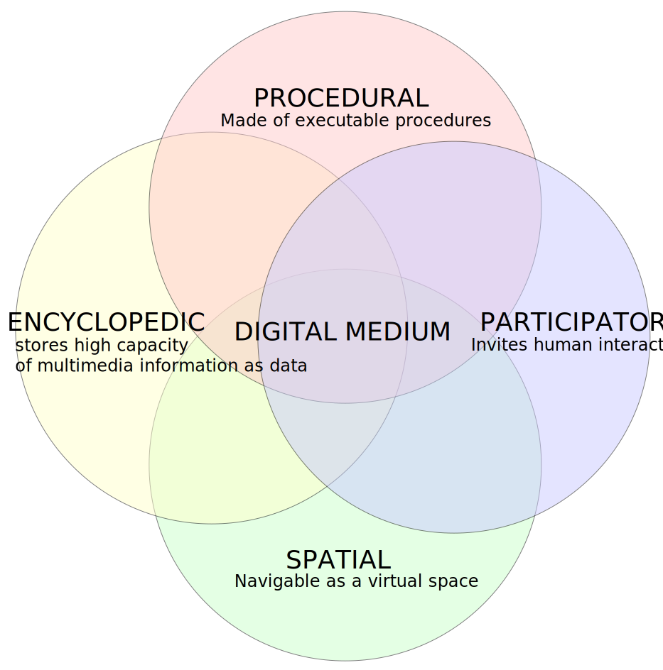
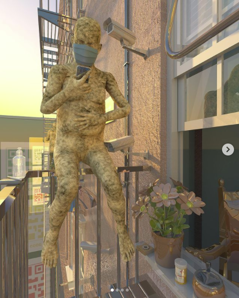

Notes on chapter 1 from Hamlet on the Holodeck by Janet Murray
...the central thesis of the book, that computation offers a powerful new set of expressive affordances for the ancient human activity of storytelling...
In short, a practice that was largely speculative when this book first appeared has now been validated by academia, artistic practice, and the marketplace. But it is still early days in expanding the expressivity of the medium for complex storytelling, and the future is still very much open for innovation.
Notes on chapter 1 from Hamlet on the Holodeck by Janet Murray
AFFORDANCES
Affordances are an object’s properties that show the possible actions users can take with it, thereby suggesting how they may interact with that object.
Designers employ affordances from what users already understand. This appropriation can be done beautifully and minimally by building upon established design patterns. A button doesn’t have to look like a real-world button with drop shadows and bevels. It only needs a cue to explain its interactivity. Today an overlay upon a webpage may only have an X as the button to close the overlay.
Notes on chapter 1 from Hamlet on the Holodeck by Janet Murray
AFFORDANCES
Psychologist James J. Gibson (1904-1979) coined the word "affordance" to describe the "actionable possibilities" in an environment, in other words the environment providing the opportunity for action. Affordances depend upon the relationship between the environment and the human.
It is through the environment affordances as perceived by people that we change the environment to suit our needs, such as creating stairs upon the Earth's natural steep slopes so that humans may afford to walk up those slopes.
Notes on chapter 1 from Hamlet on the Holodeck by Janet Murray
Digital Affordances as proposed by Janet Murray
The more complex the medium, the better that it can be employed to tell complicated stories.
Notes on chapter 1 from Hamlet on the Holodeck by Janet Murray

What innovations in storytelling do you foresee?
Uses of Augmented Reality
wanna “steal” new Cheetos #CrunchPopMix from our #SBLV commercial tonight? scan our commercial with Snapchat and “steal” a bag of Cheetos on me.
— Chester Cheetah (@ChesterCheetah) February 7, 2021
so get your phone ready. while supplies last. pic.twitter.com/w34P6jMiQ1
Uses of Augmented Reality
Uses of Augmented Reality
Nina Chanel Abney is a visual artist, primarily a painter, printmaker and muralist.

Uses of Augmented Reality
Nina Chanel Abney "Imaginary Friend" (2020)
Uses of Augmented Reality
Nurbanu Asena is an illustator, animator and documentary filmmaker. These projects use the 2D Stack object in Spark AR Studio.
Uses of Augmented Reality
Ziyang Wu is an artist. "His recent practices examine how the virtual world, data and algorithm as invisible forces ubiquitously micro-alienates and reconstructs human in the highly globalized post-Internet society."
Uses of Augmented Reality
|  |
Where Did Macy Go?, 2020, animated video, 8 min 57 sec (full video) |
Uses of Augmented Reality
Ziyang Wu is an artist. "His recent practices examine how the virtual world, data and algorithm as invisible forces ubiquitously micro-alienates and reconstructs human in the highly globalized post-Internet society."
Where Did Macy Go?, 2020, animated video, 8 min 57 sec (full video). Below is episode 1.
Uses of Augmented Reality
Ziyang Wu is an artist. "His recent practices examine how the virtual world, data and algorithm as invisible forces ubiquitously micro-alienates and reconstructs human in the highly globalized post-Internet society."
Where Did Macy Go?, 2020, animated video, 8 min 57 sec (full video). Below is episode 3.
Uses of Augmented Reality
Kingfolk is an AR app created by Idris Brewster and Glenn Cantave to present historical black leaders as virtual monuments.

Image is from "An AR App Wants to Correct the Scarcity of Monuments to Historical Leaders of Color" article by Valentina Di Liscia, Hyperallergic
Selecting a Platform
- The TikTok Effector is not available in the United States
- Snapchat offers Lens Studio, however Snapchat has less than half the number of users of Instagram
- According to 2020 numbers, Instagram has 121 million active users in the United States